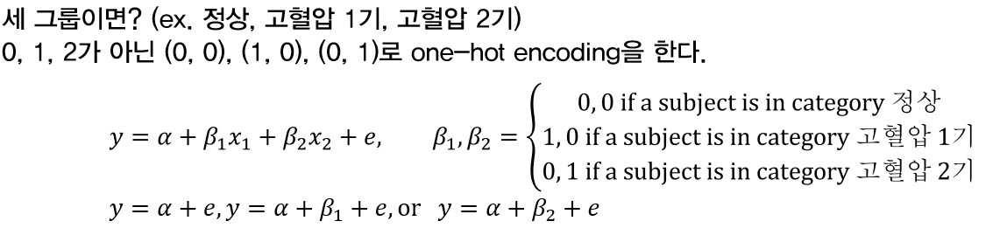

11-0. Load data
Warning: package 'dplyr' was built under R version 4.2.3
Attaching package: 'dplyr'
The following objects are masked from 'package:stats':
filter, lag
The following objects are masked from 'package:base':
intersect, setdiff, setequal, union
Attaching package: 'data.table'
The following objects are masked from 'package:dplyr':
between, first, last
로지스틱 회귀분석과 생존분석을 위해 중간고사 데이터와 framingham cohort dataset을 불러오겠습니다.
<- fread ("data/hyp_ihd_cohort.csv" , data.table = FALSE )$ HYP2 <- ifelse (data$ BP_SYS < 140 , 0 , ifelse (between (data$ BP_SYS, 140 , 160 ), 1 , ifelse (data$ BP_SYS > 160 , 2 , - 1 )))#install.packages("riskCommunicator") library (riskCommunicator)
Warning: package 'riskCommunicator' was built under R version 4.2.3
data (framingham)<- as.data.frame (framingham)<- filter (framingham, PERIOD == 1 )mytable (CVD~ SEX+ AGE+ TOTCHOL+ SYSBP+ DIABP+ CURSMOKE, data= fr)
Descriptive Statistics by 'CVD'
—————————————————————————————————————————
0 1 p
(N=3277) (N=1157)
—————————————————————————————————————————
SEX 0.000
- 1 1258 (38.4%) 686 (59.3%)
- 2 2019 (61.6%) 471 (40.7%)
AGE 48.7 ± 8.4 53.5 ± 8.3 0.000
TOTCHOL 233.6 ± 42.9 246.7 ± 47.9 0.000
SYSBP 129.7 ± 20.6 142.1 ± 24.8 0.000
DIABP 81.6 ± 11.3 87.2 ± 13.2 0.000
CURSMOKE 0.027
- 0 1698 (51.8%) 555 (48.0%)
- 1 1579 (48.2%) 602 (52.0%)
—————————————————————————————————————————
11-1. Logistic regression
회귀분석의 주요 관심사인 coefficient의 추정을 할 때 보통 \(e^\beta\) 로 해석합니다. summary()함수에서 보여지는 estimate는 그냥 \(\beta\) 이기 때문에 exponential을 취해주어야 합니다. moonbook패키지의 extractOR() 함수를 활용하면 쉽게 구할 수 있습니다.
<- glm (IHD ~ factor (SEX) + AGE + BMI + BP_SYS + TOT_CHOL + factor (HYP2), data= data, family= "binomial" )summary (lm_fit)
Call:
glm(formula = IHD ~ factor(SEX) + AGE + BMI + BP_SYS + TOT_CHOL +
factor(HYP2), family = "binomial", data = data)
Deviance Residuals:
Min 1Q Median 3Q Max
-1.2036 -0.4129 -0.2634 -0.1805 3.0637
Coefficients:
Estimate Std. Error z value Pr(>|z|)
(Intercept) -9.745888 1.732280 -5.626 1.84e-08 ***
factor(SEX)2 0.740593 0.250409 2.958 0.0031 **
AGE 0.056683 0.008382 6.762 1.36e-11 ***
BMI 0.063424 0.038442 1.650 0.0990 .
BP_SYS 0.025753 0.013264 1.942 0.0522 .
TOT_CHOL -0.003417 0.003647 -0.937 0.3487
factor(HYP2)1 -0.119433 0.414998 -0.288 0.7735
factor(HYP2)2 -16.355433 577.051406 -0.028 0.9774
---
Signif. codes: 0 '***' 0.001 '**' 0.01 '*' 0.05 '.' 0.1 ' ' 1
(Dispersion parameter for binomial family taken to be 1)
Null deviance: 613.28 on 1161 degrees of freedom
Residual deviance: 520.56 on 1154 degrees of freedom
AIC: 536.56
Number of Fisher Scoring iterations: 15
OR lcl ucl p
(Intercept) 0.00 0.00 0.00 0.0000
factor(SEX)2 2.10 1.28 3.43 0.0031
AGE 1.06 1.04 1.08 0.0000
BMI 1.07 0.99 1.15 0.0990
BP_SYS 1.03 1.00 1.05 0.0522
TOT_CHOL 1.00 0.99 1.00 0.3487
factor(HYP2)1 0.89 0.39 2.00 0.7735
factor(HYP2)2 0.00 0.00 Inf 0.9774
범주형 변수와 factor
범주형 변수인 SEX에 대한 OR을 해석하기 위해선 레퍼런스 군이 무엇인지 잘 알아야 합니다. 그러기 위해 범주형 변수로 처리하기 위한 factor에 대해 다시 한 번 살펴보겠습니다. factor는 원하는 변수를 더미 변수로 만들어줍니다. 더미변수로 만들어지면 특정한 그룹은 레퍼런스 그룹이 됩니다.

지난번 10강의 예시입니다. 정상 그룹을 (0, 0)으로 코딩한다고 합시다. 그러면 정상 그룹이 레퍼런스 그룹이 됩니다. (0, 0)이 들어갈 경우 회귀식은 \(y=a+e\) 이 됩니다. 이번엔 \(\beta_1, \beta_2\) 가 추가 되었을 때를 함께 비교해보세요. 정상군 대비 고혈압 1기에 대한 \(\beta_1\) , 고혈압 2기에 대한 \(\beta_2\) 효과가 추가되었습니다. 즉, 레퍼런스군 대비 관심군의 효과로 해석할 수 있습니다.
R에서 factor로 더미변수화할 때 알파벳, 숫자 등 순서를 따졌을 때 제일 앞에 있는 경우를 레퍼런스로 봅니다. 그러니까 지금 HYP2변수 처럼 0, 1, 2 로 코딩되어 있다면 0인 그룹이 레퍼런스 그룹이 됩니다.
Levels에 0, 1, 2 순으로 더미변수가 만들어졌다는 뜻입니다.
보통 우리는 정상 대비 관심군의 효과를 궁금해하므로 정상군, 또는 레퍼런스 군으로 둘 그룹을 0으로 코딩하면 됩니다.
SEX 변수는 1, 2로만 코딩이 되어 있기 때문에 1이 레퍼런스 그룹이 됩니다. 그러면 남자 대비 여자의 위험도가 2.1배 높다고 해석할 수 있습니다. 만약에 여자를 레퍼런스로 두려면 어떻게 해야할까요? ifelse()함수를 써서 새롭게 변수를 만들어주면 됩니다.
$ SEX2 <- ifelse (data$ SEX == 2 , 0 , 1 )<- glm (IHD ~ factor (SEX2) + AGE + BMI + BP_SYS + TOT_CHOL + factor (HYP2), data= data, family= "binomial" )extractOR (lm_fit)
OR lcl ucl p
(Intercept) 0.00 0.00 0.00 0.0000
factor(SEX2)1 0.48 0.29 0.78 0.0031
AGE 1.06 1.04 1.08 0.0000
BMI 1.07 0.99 1.15 0.0990
BP_SYS 1.03 1.00 1.05 0.0522
TOT_CHOL 1.00 0.99 1.00 0.3487
factor(HYP2)1 0.89 0.39 2.00 0.7735
factor(HYP2)2 0.00 0.00 Inf 0.9774
여자 대비 남자의 위험도가 0.48배로 나왔습니다. 이는 2.10의 역수입니다.
이번엔 framingham 데이터셋으로 해보겠습니다. 간단한 EDA를 해보겠습니다.
<- glm (CVD~ factor (SEX)+ AGE+ TOTCHOL+ SYSBP+ DIABP+ factor (CURSMOKE), data= fr, family= "binomial" )summary (lm_fit)
Call:
glm(formula = CVD ~ factor(SEX) + AGE + TOTCHOL + SYSBP + DIABP +
factor(CURSMOKE), family = "binomial", data = fr)
Deviance Residuals:
Min 1Q Median 3Q Max
-1.9130 -0.7797 -0.5323 0.9032 2.5986
Coefficients:
Estimate Std. Error z value Pr(>|z|)
(Intercept) -7.5745677 0.3911954 -19.363 < 2e-16 ***
factor(SEX)2 -1.0006086 0.0792484 -12.626 < 2e-16 ***
AGE 0.0568541 0.0049200 11.556 < 2e-16 ***
TOTCHOL 0.0045542 0.0008512 5.350 8.79e-08 ***
SYSBP 0.0138035 0.0027534 5.013 5.35e-07 ***
DIABP 0.0119336 0.0048969 2.437 0.0148 *
factor(CURSMOKE)1 0.3161914 0.0787249 4.016 5.91e-05 ***
---
Signif. codes: 0 '***' 0.001 '**' 0.01 '*' 0.05 '.' 0.1 ' ' 1
(Dispersion parameter for binomial family taken to be 1)
Null deviance: 5036.2 on 4381 degrees of freedom
Residual deviance: 4413.7 on 4375 degrees of freedom
(52 observations deleted due to missingness)
AIC: 4427.7
Number of Fisher Scoring iterations: 4
extractOR (lm_fit, digits = 3 )
OR lcl ucl p
(Intercept) 0.001 0.000 0.001 0.0000
factor(SEX)2 0.368 0.315 0.429 0.0000
AGE 1.059 1.048 1.069 0.0000
TOTCHOL 1.005 1.003 1.006 0.0000
SYSBP 1.014 1.008 1.019 0.0000
DIABP 1.012 1.002 1.022 0.0148
factor(CURSMOKE)1 1.372 1.176 1.601 0.0001
사실 여기에는 missing value를 포함하는 행이 있습니다. missing value를 확인하지 않으면 분석 결과를 잘못 리포트할 수 있으니 꼭 확인하시기 바랍니다.
Hosmer-Lemeshow’s goodness-of-fit test
모델의 적합도를 확인하는 적합도 검정입니다. p-value 가 0.05보다 크면 모델이 적합하다고 볼 수 있습니다.
#install.packages("glmtoolbox") library (glmtoolbox)
Warning: package 'glmtoolbox' was built under R version 4.2.3
The Hosmer-Lemeshow goodness-of-fit test
Group Size Observed Expected
1 438 18 23.22501
2 438 38 39.10919
3 438 51 56.42704
4 438 78 73.52896
5 438 86 91.19112
6 438 113 111.10292
7 438 142 133.65569
8 438 186 160.54835
9 438 189 195.31230
10 438 243 260.14718
11 2 2 1.75224
Statistic = 13.17207
degrees of freedom = 9
p-value = 0.15497
p-value가 0.05보다 크므로 모델이 적합하다고 할 수 있습니다.
Pseudo R squared
선형회귀분석에서 결정계수 R squared를 구할 수 있었던 것처럼 로지스틱 회귀분석 (일반화선형모형) 에서도 결정계수를 구할 수 있습니다.
Attaching package: 'DescTools'
The following object is masked from 'package:data.table':
%like%
PseudoR2 (lm_fit, which= "all" )
McFadden McFaddenAdj CoxSnell Nagelkerke AldrichNelson
0.1236062 0.1208263 0.1324303 0.1938557 0.1243888
VeallZimmermann Efron McKelveyZavoina Tjur AIC
0.2326198 0.1347218 0.2199058 0.1372955 4427.6875565
BIC logLik logLik0 G2
4472.3843801 -2206.8437782 -2518.0960509 622.5045453
다양하게 있는데 McFaddenAdj나 Nagelkerke 방식을 많이 쓰는 것 같습니다. 그런데 Paul Allison(University of Pennsylvania)의 포스트 를 보시면 Tjur결과가 좀 더 믿을만해 보인다고 합니다. 관심있으신 분들은 한 번 보세요.
11-2. Survival analysis
생존분석은 시간에 따른 사망이나 재발등의 변화를 관찰하는 분석으로 시간이라는 새로운 변수가 필요합니다. 즉, 관찰을 시작한 시점부터 관찰을 마친 시점까지의 시간을 계산할 수 있어야 합니다. framingham dataset에는 CVD 발생에 대한 변수(CVD)가 있고 이벤트 발생 또는 마지막 follow-up 시점을 기록한 TIME 변수 (TIMECVD)가 있습니다. 이를 활용하여 생존분석을 하겠습니다.
Kaplan-Meier plot
library (survival)#install.packages("survminer") # ggplot for survival analysis library (survminer)
Warning: package 'survminer' was built under R version 4.2.3
Loading required package: ggplot2
Loading required package: ggpubr
Warning: package 'ggpubr' was built under R version 4.2.3
Attaching package: 'survminer'
The following object is masked from 'package:survival':
myeloma
<- filter (fr, TIMECVD > 0 )<- Surv (fr2$ TIMECVD, fr2$ CVD)<- survfit (surv_object ~ SEX, data= fr2)ggsurvplot (surv_fit,data= fr2,conf.int = TRUE ,risk.table = TRUE ,ggtheme = theme_bw (base_size = 20 ),pval= TRUE
ggsurvplot은 다양한 옵션이 있어서 더 많은 정보를 담을 수 있습니다. 이런 포스트 도 확인해보세요.
Log-rank test
집단간의 생존율을 비교할 땐 survdiff()함수를 활용해서 log rank test를 할 수 있습니다.
<- Surv (fr2$ TIMECVD, fr2$ CVD)survdiff (surv_object ~ SEX, data= fr2)
Call:
survdiff(formula = surv_object ~ SEX, data = fr2)
N Observed Expected (O-E)^2/E (O-E)^2/V
SEX=1 1837 579 397 83.6 139
SEX=2 2436 417 599 55.4 139
Chisq= 139 on 1 degrees of freedom, p= <2e-16
p-value가 0.05보다 작으므로 성별간 생존율의 차이가 통계적으로 유의하다고 할 수 있습니다.
Cox proportional hazard model
Cox regression도 그간 해온 회귀분석과 유사합니다.
$ SEX_F <- as.factor (fr2$ SEX)$ CURSMOKE_F <- as.factor (fr2$ CURSMOKE)<- Surv (fr2$ TIMECVD, fr2$ CVD)<- coxph (surv_object ~ SEX_F+ AGE+ TOTCHOL+ SYSBP+ DIABP+ CURSMOKE_F, data= fr2)summary (cox_fit)
Call:
coxph(formula = surv_object ~ SEX_F + AGE + TOTCHOL + SYSBP +
DIABP + CURSMOKE_F, data = fr2)
n= 4222, number of events= 986
(51 observations deleted due to missingness)
coef exp(coef) se(coef) z Pr(>|z|)
SEX_F2 -0.8806877 0.4144978 0.0691337 -12.739 < 2e-16 ***
AGE 0.0557665 1.0573508 0.0042997 12.970 < 2e-16 ***
TOTCHOL 0.0032562 1.0032615 0.0006585 4.945 7.62e-07 ***
SYSBP 0.0152523 1.0153692 0.0023050 6.617 3.66e-11 ***
DIABP 0.0099366 1.0099861 0.0041876 2.373 0.0177 *
CURSMOKE_F1 0.3229036 1.3811322 0.0673202 4.797 1.61e-06 ***
---
Signif. codes: 0 '***' 0.001 '**' 0.01 '*' 0.05 '.' 0.1 ' ' 1
exp(coef) exp(-coef) lower .95 upper .95
SEX_F2 0.4145 2.4126 0.362 0.4746
AGE 1.0574 0.9458 1.048 1.0663
TOTCHOL 1.0033 0.9967 1.002 1.0046
SYSBP 1.0154 0.9849 1.011 1.0200
DIABP 1.0100 0.9901 1.002 1.0183
CURSMOKE_F1 1.3811 0.7240 1.210 1.5759
Concordance= 0.733 (se = 0.007 )
Likelihood ratio test= 688.7 on 6 df, p=<2e-16
Wald test = 665.1 on 6 df, p=<2e-16
Score (logrank) test = 693.9 on 6 df, p=<2e-16
HR lcl ucl p
SEX_F2 0.41 0.36 0.47 0.000
AGE 1.06 1.05 1.07 0.000
TOTCHOL 1.00 1.00 1.00 0.000
SYSBP 1.02 1.01 1.02 0.000
DIABP 1.01 1.00 1.02 0.018
CURSMOKE_F1 1.38 1.21 1.58 0.000
Proportional hazard assumption
Cox regression은 비례위험가정을 하기 때문에 이 가정이 만족하지 않으면 결과가 왜곡될 수 있습니다. 리뷰어들이 종종 이 가정에 대해 물어보기 때문에 꼭 체크할 필요도 있습니다.
<- cox.zph (cox_fit)
chisq df p
SEX_F 0.51596 1 0.4726
AGE 0.02114 1 0.8844
TOTCHOL 9.21565 1 0.0024
SYSBP 3.74239 1 0.0530
DIABP 3.80220 1 0.0512
CURSMOKE_F 0.00136 1 0.9705
GLOBAL 14.16572 6 0.0278
ggcoxzph (cox_ph) # 데이터 수가 많으면 매우 느립니다.